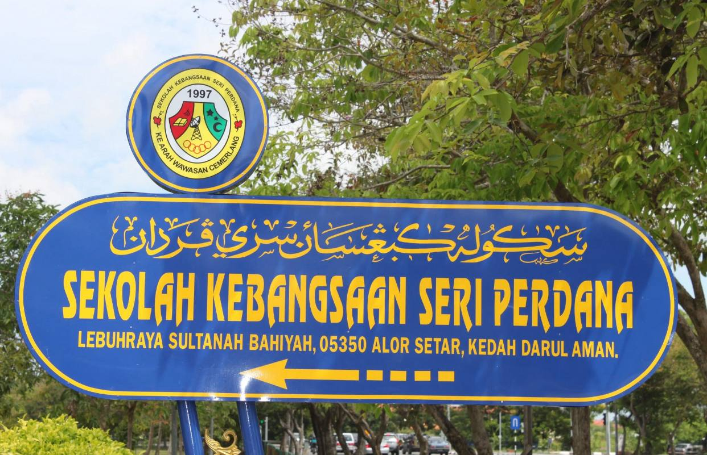
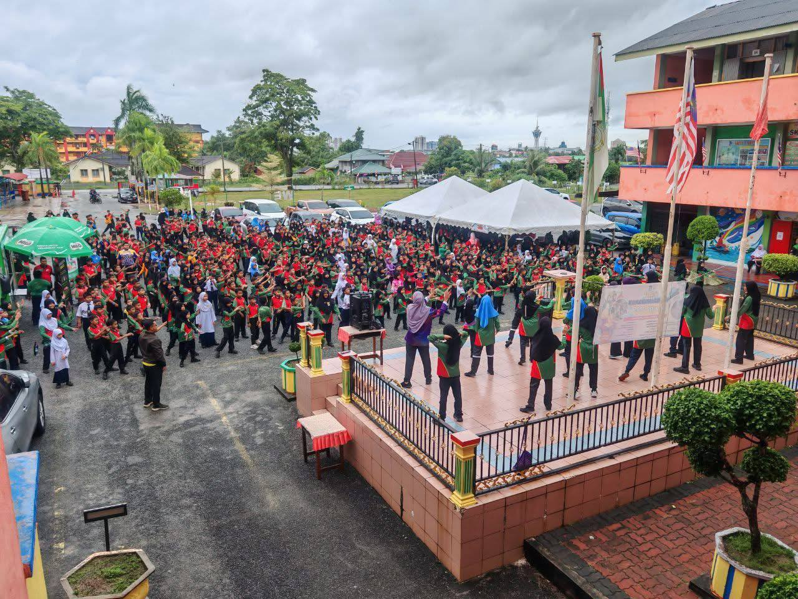
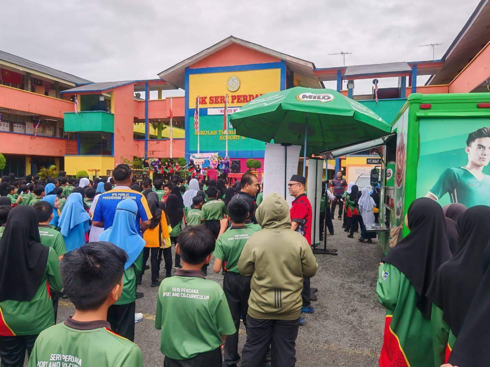
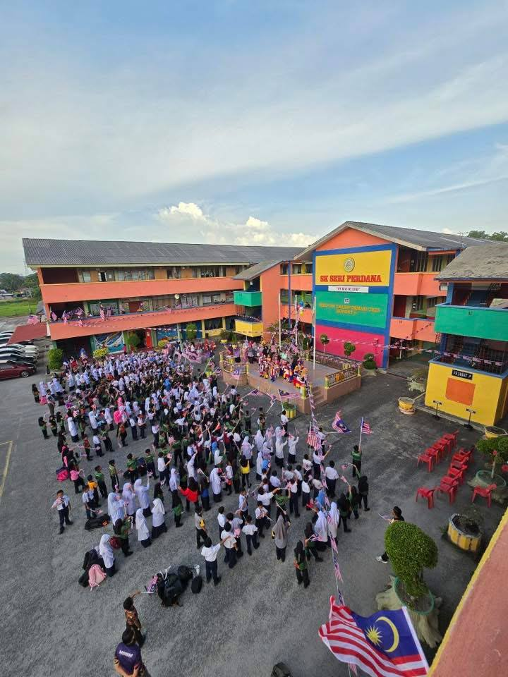
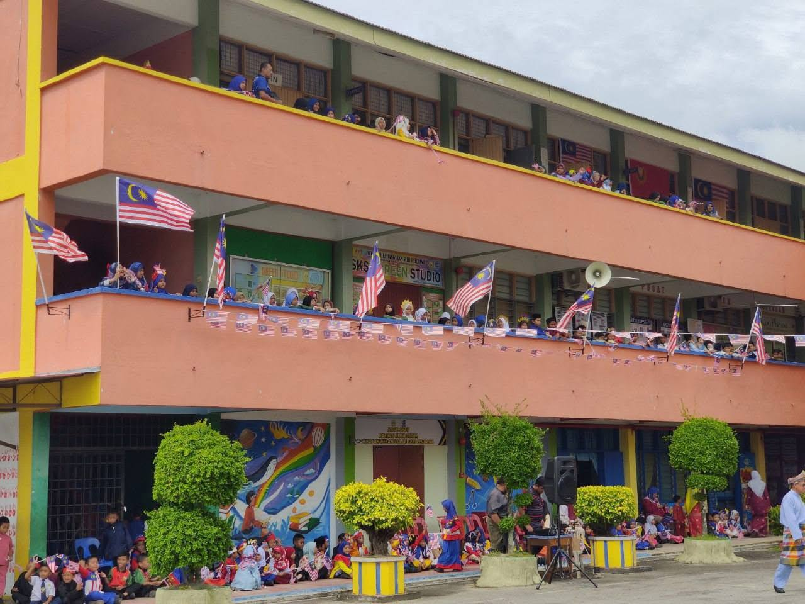
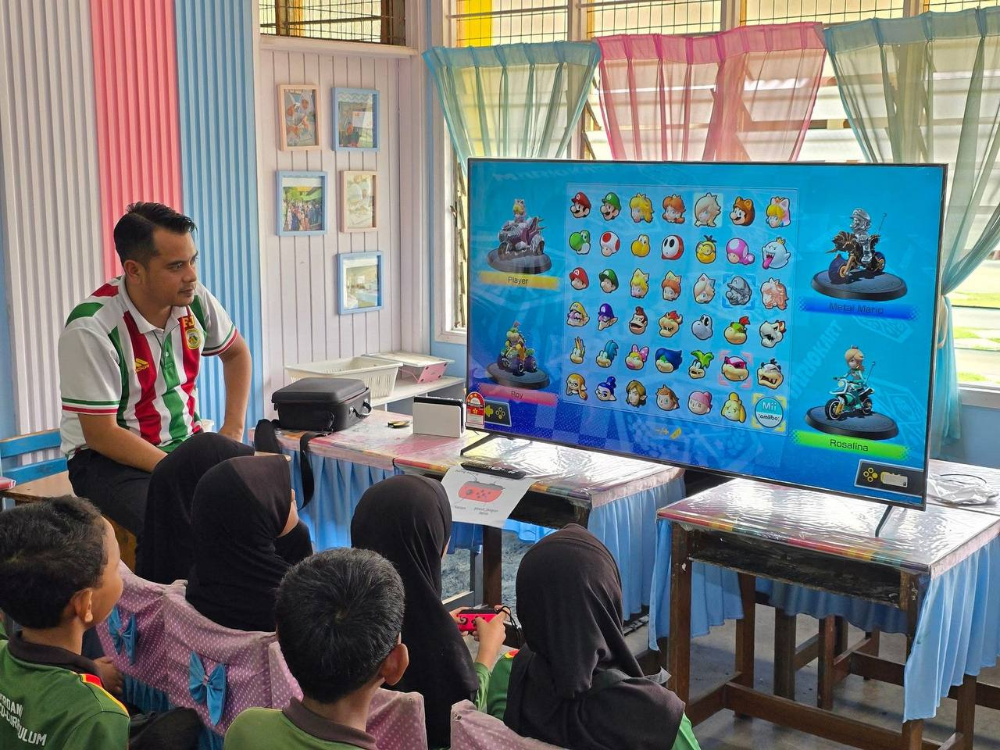

Sekolah Kebangsaan Seri Perdana is located in Alor Setar, Kedah. It is a primary school that focuses on both academic excellence and personal development of students.
The school is situated at Lebuhraya Sultanah Bahiyah, making it easy to access. It provides a comfortable and friendly learning environment with classrooms and facilities that support students in their learning.
The school also focuses on good values and character building. Students are encouraged to join sports, clubs, and other activities to develop their talents and interests.
There are about 61 teachers and staff who are dedicated to helping students succeed. They use modern teaching methods and also apply technology in learning to make lessons more effective.
The school has around 776 students from different backgrounds. It promotes inclusiveness and ensures that every student feels accepted and supported.
Even though the school is categorized as “Rendah”, the teachers continue to work hard to improve the quality of education. The school aims to prepare students with the skills and knowledge needed for the future.





